Dimension
▼Vary_only_Dimension (MvNormal, dimension, 3 runs)
Pooled Chains results
Wasserstein Distance

Sampler vs IID stats
| Sampler | Varying | t-stat | p-value | Glass Δ |
|---|---|---|---|---|
| DEMetro_Z | 30 | 15.544 | 0.00411 | 4818.628 |
| Metro | 30 | 13.677 | 0.00321 | 31.923 |
| HMC | 30 | -0.444 | 0.69 | -0.654 |
| SMC | 30 | 1.887 | 0.149 | 1.263 |
Sampler vs Sampler stats
| Sampler Pair | Varying | t-stat | p-value | Cohen’s d |
|---|---|---|---|---|
| Metro_vs_SMC | 0 | 12.253 | 0.0066 | 7.074 |
| DEMetro_Z_vs_SMC | 0 | 15.547 | 0.00411 | 8.976 |
| HMC_vs_DEMetro_Z | 0 | -15.519 | 0.00413 | -8.960 |
| HMC_vs_SMC | 0 | -1.648 | 0.241 | -0.952 |
| HMC_vs_Metro | 0 | -13.084 | 0.00579 | -7.554 |
| Metro_vs_DEMetro_Z | 0 | -15.333 | 0.00423 | -8.853 |
Wasserstein Distance (scatter)
Glass’s Δ WS
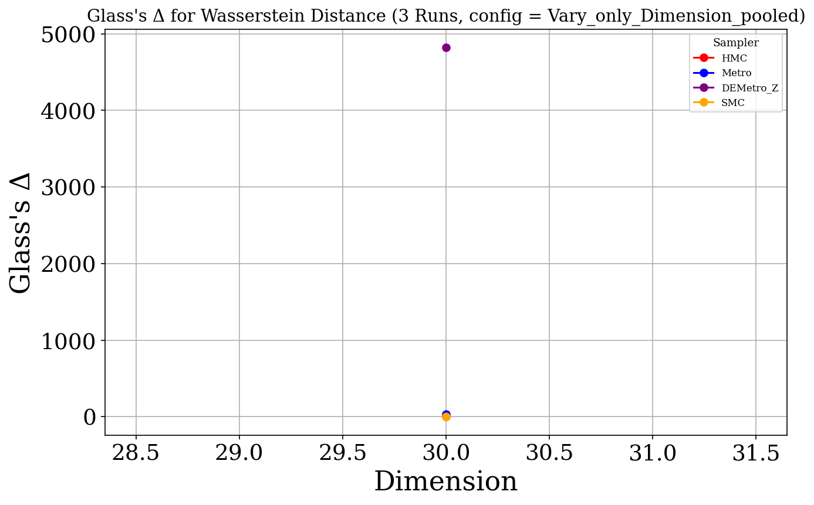
Glass’s Δ table
| Sampler | Varying | MCMC Mean | IID Mean | IID Std | Glass’s Δ |
|---|---|---|---|---|---|
| DEMetro_Z | 30 | 1.865 | 0.028 | 0.000 | 4818.628 |
| Metro | 30 | 0.041 | 0.028 | 0.000 | 31.923 |
| HMC | 30 | 0.028 | 0.028 | 0.000 | -0.654 |
| SMC | 30 | 0.029 | 0.028 | 0.000 | 1.263 |
Mmd Rff
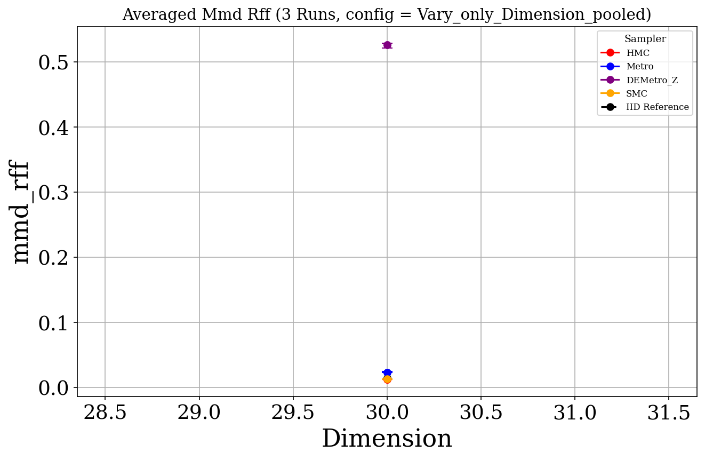
Sampler vs IID stats
| Sampler | Varying | t-stat | p-value | Glass Δ |
|---|---|---|---|---|
| DEMetro_Z | 30 | 123.864 | 4.55e-05 | 491.290 |
| Metro | 30 | 6.912 | 0.00683 | 9.051 |
| HMC | 30 | -3.218 | 0.0511 | -2.066 |
| SMC | 30 | -1.966 | 0.126 | -1.422 |
Sampler vs Sampler stats
| Sampler Pair | Varying | t-stat | p-value | Cohen’s d |
|---|---|---|---|---|
| Metro_vs_SMC | 0 | 6.866 | 0.0206 | 3.964 |
| DEMetro_Z_vs_SMC | 0 | 124.625 | 6.44e-05 | 71.952 |
| HMC_vs_DEMetro_Z | 0 | -124.301 | 6.47e-05 | -71.765 |
| HMC_vs_Metro | 0 | -7.872 | 0.0158 | -4.545 |
| Metro_vs_DEMetro_Z | 0 | -149.098 | 4.5e-05 | -86.082 |
| HMC_vs_SMC | 0 | -4.027 | 0.0565 | -2.325 |
Mmd Rff (scatter)
Glass’s Δ MMD-RFF
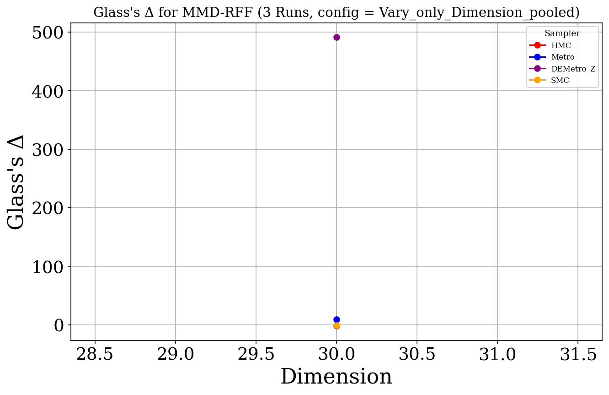
Glass’s Δ table
| Sampler | Varying | MCMC Mean | IID Mean | IID Std | Glass’s Δ |
|---|---|---|---|---|---|
| DEMetro_Z | 30 | 0.524 | 0.015 | 0.001 | 491.290 |
| Metro | 30 | 0.024 | 0.015 | 0.001 | 9.051 |
| HMC | 30 | 0.013 | 0.015 | 0.001 | -2.066 |
| SMC | 30 | 0.013 | 0.015 | 0.001 | -1.422 |
Runtime
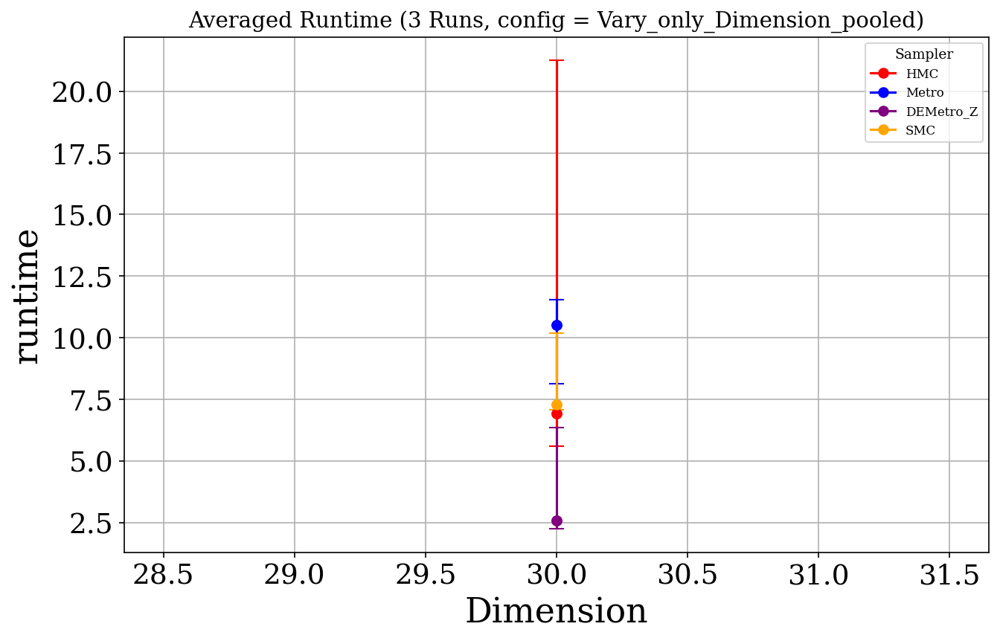
Runtime (scatter)
Ess
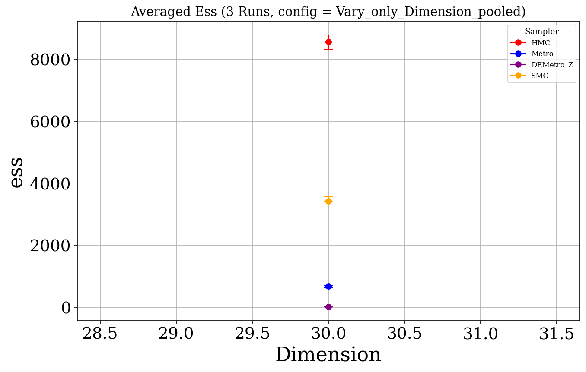
Ess (scatter)
Ess Per Sec
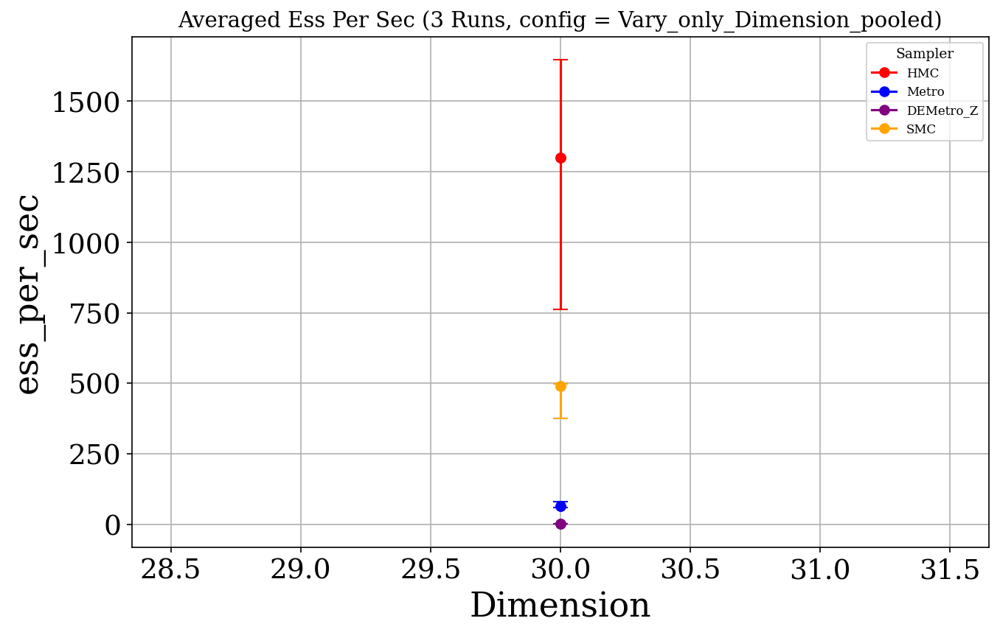
Ess Per Sec (scatter)
R Hat
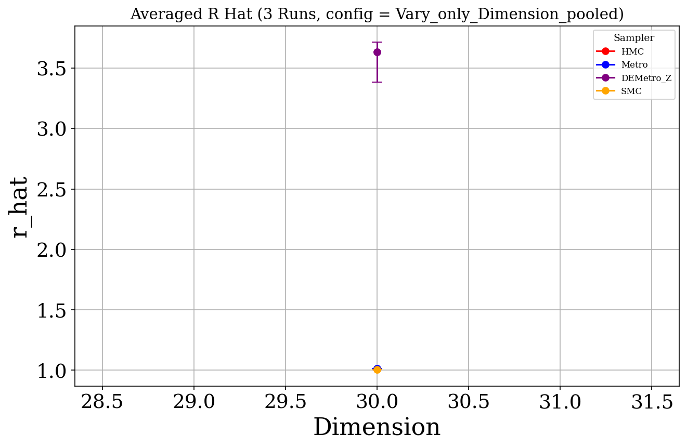
R Hat (scatter)
One Chain results
Wasserstein Distance
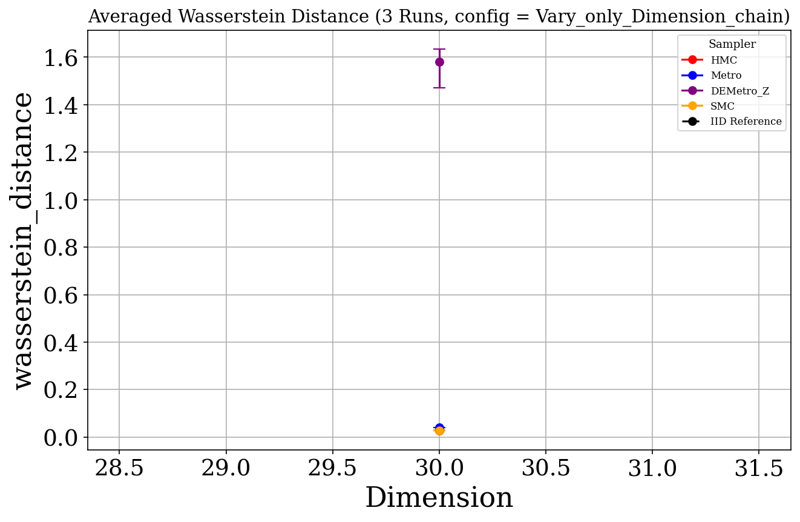
Sampler vs IID stats
| Sampler | Varying | t-stat | p-value | Glass Δ |
|---|---|---|---|---|
| DEMetro_Z | 30 | 15.961 | 0.0039 | 3974.395 |
| Metro | 30 | 45.795 | 1.93e-06 | 34.395 |
| HMC | 30 | -0.769 | 0.511 | -1.540 |
| SMC | 30 | 0.135 | 0.905 | 0.550 |
Sampler vs Sampler stats
| Sampler Pair | Varying | t-stat | p-value | Cohen’s d |
|---|---|---|---|---|
| Metro_vs_SMC | 0 | 9.084 | 0.0119 | 5.244 |
| DEMetro_Z_vs_SMC | 0 | 15.718 | 0.00402 | 9.075 |
| HMC_vs_DEMetro_Z | 0 | -15.857 | 0.00395 | -9.155 |
| HMC_vs_SMC | 0 | -0.696 | 0.558 | -0.402 |
| HMC_vs_Metro | 0 | -18.150 | 0.00302 | -10.479 |
| Metro_vs_DEMetro_Z | 0 | -15.810 | 0.00398 | -9.128 |
Wasserstein Distance (scatter)
Glass’s Δ WS
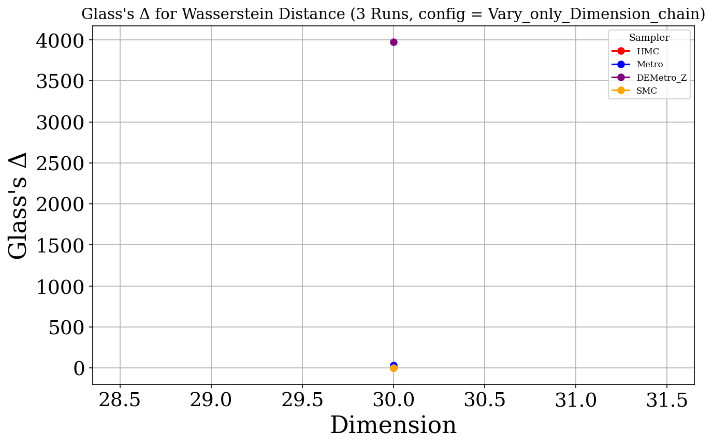
Glass’s Δ table
| Sampler | Varying | MCMC Mean | IID Mean | IID Std | Glass’s Δ |
|---|---|---|---|---|---|
| DEMetro_Z | 30 | 1.543 | 0.028 | 0.000 | 3974.395 |
| Metro | 30 | 0.041 | 0.028 | 0.000 | 34.395 |
| HMC | 30 | 0.028 | 0.028 | 0.000 | -1.540 |
| SMC | 30 | 0.029 | 0.028 | 0.000 | 0.550 |
Mmd Rff
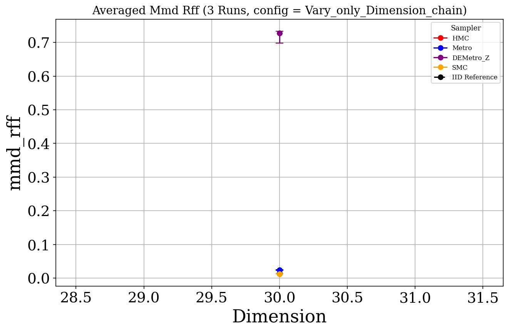
Sampler vs IID stats
| Sampler | Varying | t-stat | p-value | Glass Δ |
|---|---|---|---|---|
| DEMetro_Z | 30 | 31.586 | 0.000993 | 671.905 |
| Metro | 30 | 8.834 | 0.00146 | 8.859 |
| HMC | 30 | -3.143 | 0.0564 | -1.996 |
| SMC | 30 | -1.158 | 0.332 | -1.487 |
Sampler vs Sampler stats
| Sampler Pair | Varying | t-stat | p-value | Cohen’s d |
|---|---|---|---|---|
| Metro_vs_SMC | 0 | 27.257 | 0.00134 | 15.737 |
| DEMetro_Z_vs_SMC | 0 | 30.050 | 0.00111 | 17.349 |
| HMC_vs_DEMetro_Z | 0 | -31.327 | 0.00102 | -18.087 |
| HMC_vs_Metro | 0 | -19.475 | 0.00263 | -11.244 |
| Metro_vs_DEMetro_Z | 0 | -30.060 | 0.0011 | -17.355 |
| HMC_vs_SMC | 0 | -0.568 | 0.628 | -0.328 |
Mmd Rff (scatter)
Glass’s Δ MMD-RFF
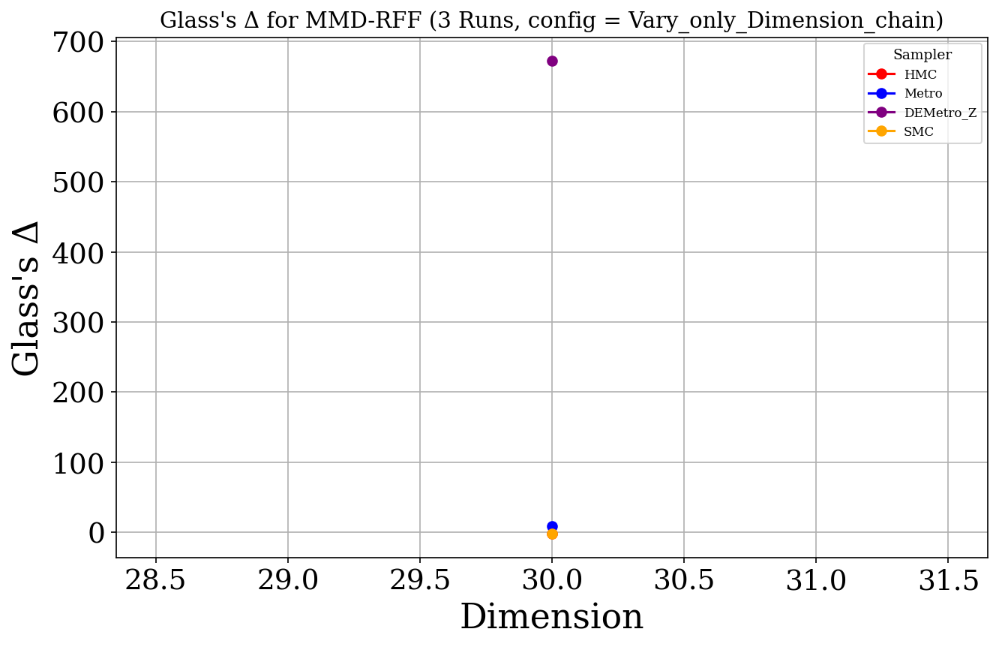
Glass’s Δ table
| Sampler | Varying | MCMC Mean | IID Mean | IID Std | Glass’s Δ |
|---|---|---|---|---|---|
| DEMetro_Z | 30 | 0.711 | 0.015 | 0.001 | 671.905 |
| Metro | 30 | 0.024 | 0.015 | 0.001 | 8.859 |
| HMC | 30 | 0.013 | 0.015 | 0.001 | -1.996 |
| SMC | 30 | 0.013 | 0.015 | 0.001 | -1.487 |
Runtime
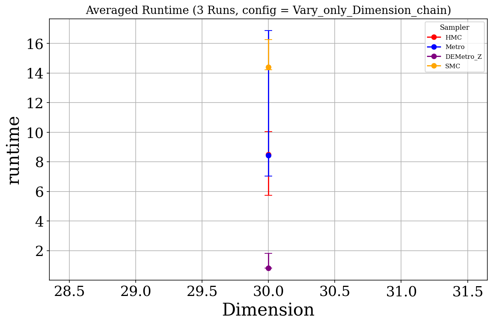
Runtime (scatter)
Ess
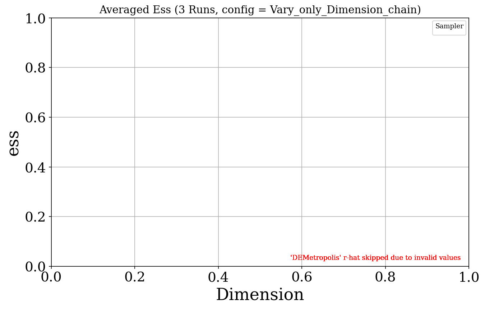
Ess Per Sec
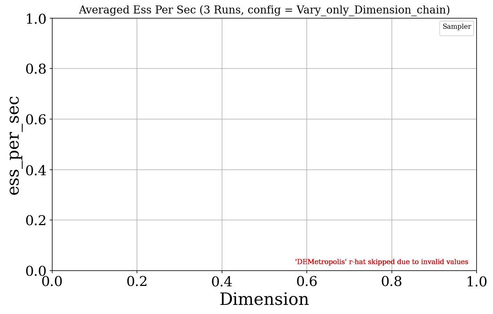
R Hat
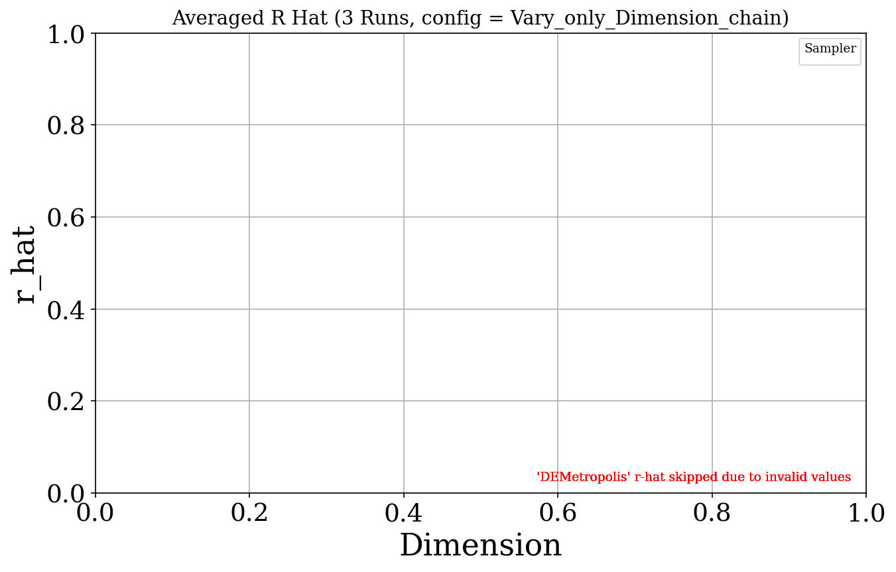
Trace Plots
Pooled
30
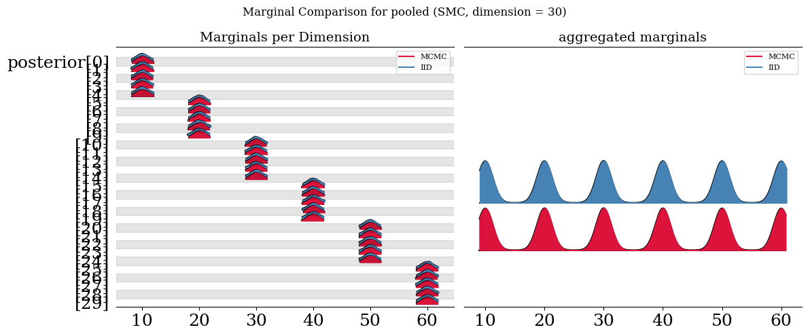
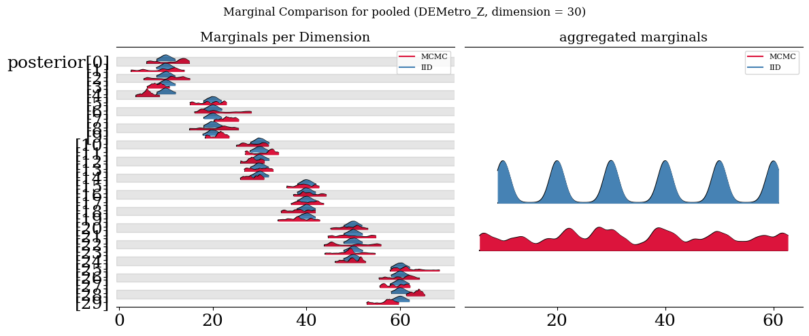
Chain
30
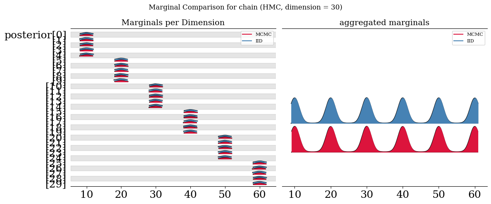
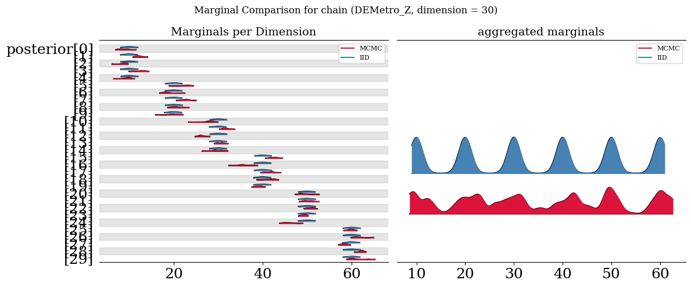
Pairwise Scatter Plots
Pooled
30
Chain
30